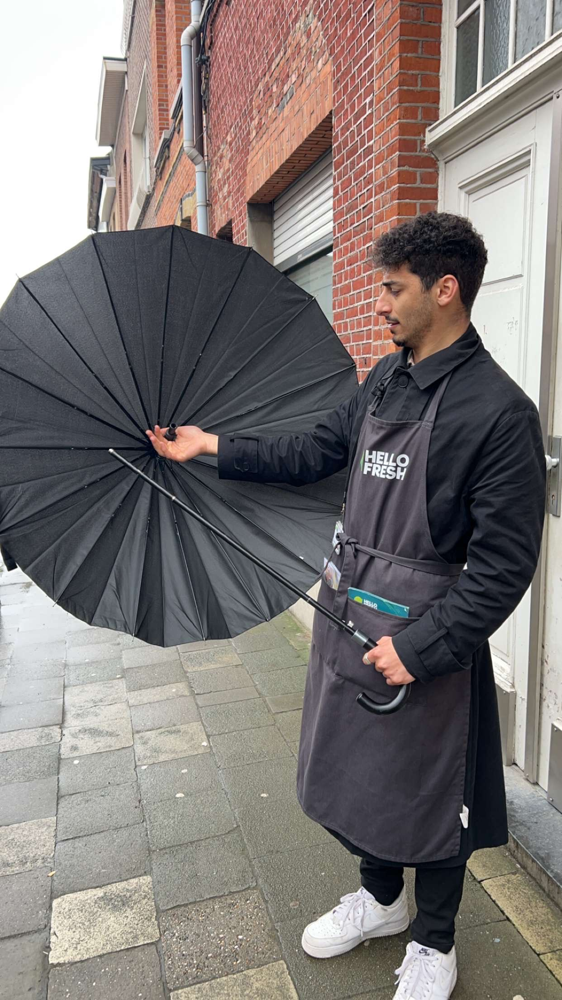

Oorspronkelijk kom ik uit de sales. Na het middelbaar wist ik eigenlijk niet wat ik wou doen. Dus koos ik voor deur-aan-deur verkoop om mezelf uit mijn comfortzone te breken en aan mijn persoonlijke ontwikkeling te werken.
Die irritante verkoper van HelloFresh? Ja dat was ik!